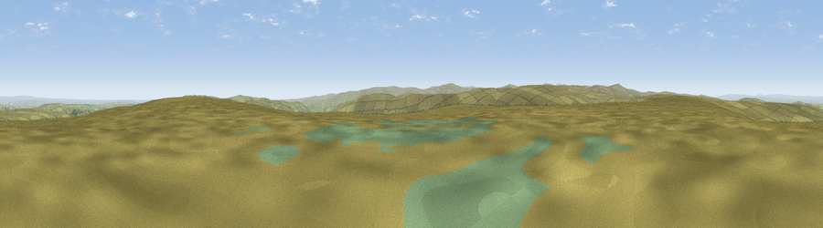

Dry Rigg [Redburn Common]
#10935 in England · top 29% of its area beats it · near RookhopeThe view, rendered

A 360° render of this exact spot computed from the terrain model, tree cover and land cover — summer colours, afternoon light, calibrated against photographs of famous viewpoints. Real trees, hedges and buildings will differ in detail.
The panorama
Grey silhouette: terrain skyline in each direction (720 bearings, Earth curvature and refraction included). Dashed green: skyline with trees (+15 m) and buildings (+8 m) as obstacles. Blue strip: how far the ground is visible on each bearing.
Where the view opens
Wedge length = distance to the farthest visible ground on that bearing (vegetation-aware). Rings at 10, 25 and 50 km.
What fills the view
95% grassland · 3% woodland · 2% cropland
Angular shares of the visible panorama (visual magnitude), not map area. Landscape diversity 0.10 (0–1 Shannon).
Key numbers
More beautiful places nearby
The staircase of upgrades: each row has a higher view potential than everything closer. Driving times are estimates from straight-line distance, calibrated against real road routing — check an actual route before setting out.
| Place | Direction | Drive | Score |
|---|---|---|---|
| Dry Rigg | ENE · 1 km | ~2 min | 65.2 |
| Boltslaw West [Bolt's Law] | E · 4 km | ~9 min | 66.9 |
| Viewpoint near Rookhope | E · 4 km | ~10 min | 70.4 |
| Viewpoint near Allenheads | W · 9 km | ~17 min | 74.6 |
| Mickle Fell | SSW · 23 km | ~37 min | 75.8 |
| Viewpoint near Eggleston | SSE · 23 km | ~38 min | 76.0 |
| Great Dun Fell | WSW · 23 km | ~38 min | 77.8 |
| Little Dun Fell | WSW · 23 km | ~38 min | 78.4 |
54.79769, -2.14655 · source: dobih hill · position refined by local search. Computed location — check access rights before visiting.